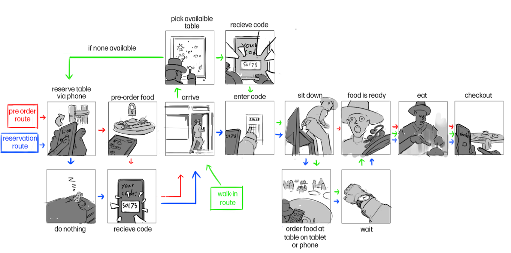
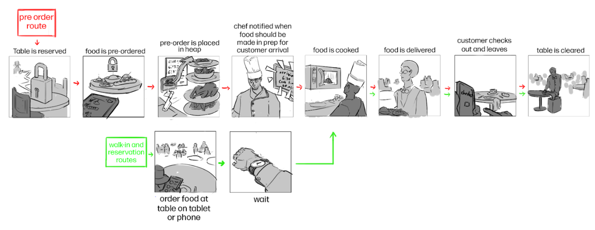

Maîtresse-en-titre
Purpose and functionality of the product:
“Maîtresse-en-titre” is a mobile application designed to streamline the restaurant reservation process. When using the app, users can easily book a table at the restaurant without having to wait in long lines or call ahead. This unique feature also allows people that don’t want to interact with others, or those embarrassed by their companions to eat out more discreetly. The app's functionality also allows users to check in for their reservation using a unique code provided after booking. Users have the option to pre-order their food ahead of time when booking their reservation, however, users also have to pay for their meal ahead of time.
Maîtresse-en-titre offers users the ability to order their meals directly from the app without having to interact with a waiter. This feature helps to reduce wait times and eliminate miscommunication when placing orders. Users can also pay for their meals using the app, without having to speak to anyone. This further enhances the app's convenience, allowing users to complete their dining experience seamlessly and efficiently. The purpose of Maîtresse-en-titre is to provide a seamless discrete dining experience for users by reducing wait times and eliminating the need for physical menus. With this app, users can easily manage their dining plans and enjoy a stress-free dining experience at their favorite restaurants.
Storyboard + Exploration:
When designing the storyboards, the team started off with just words inside the frames in order to nail the basic understanding of what to expect in the frame first. When it became clear, we started the sketching process. In this storyboard, from the user's perspective, we present three scenarios that can happen on the user's side. Which is walk-in with no reservation, reserve a table and pre-order, and lastly, just reserve the table. The process has been illustrated below, some intertwined with each other, they are all going to eat regardless, but some steps are only relevant in specific scenarios. Additionally, the process has been modified and improved after the feedback session to show improvements.
Figure 1: User’s activities
Figure 2: Business’ activities
In the above storyboard, which is from the business’s perspective, we present the way the business side answers the customers side scenario, different from the user’s side, there are only two scenarios here, which is reacting to a reservation with pre-ordered food, and reacting to walk-in or reservation customer. There are processes that intertwine, such as notifying the cook to prepare the meal, and there are processes that only exist in specific scenarios.
Reflect user’s feedback + How it affects your design:
Feedback from friends:
“I like the systems, but how do you actually get your table at the restaurant after booking it?” - Mark. K. One of the problems we realized while wireframing is the need for a confirmation code, similar to the confirmation number that people receive when booking an airplane or cinema ticket, to confirm the correct people. “While I like the idea, I think it would be better if the app can be used for multiple restaurants” - Yash. A. This is one of the features we have been considering, but it may be challenging due to varying menus and payment methods across different restaurants. Therefore, we have decided to focus on a single restaurant for now. “What if I want to pay by cash or use something other than a card?” - Mark. K.
Since the app is designed to be digital, paying with cash or other non-digital methods presents a significant limitation. To address this, we plan to provide phone-line or alternative booking methods for users who prefer a more traditional approach. “I think it will be really annoying if I run into technical issues or bugs, glitches, since you do it all on apps, it will be a pain if this happens” - Natalie. P.
This feedback has helped us to develop a feature in the app that provides a small icon to call a waiter immediately for assistance if any technical issues arise. This feature could also facilitate a more traditional dining experience if desired.
“Isn't this going against the purpose of ‘dining’? Like it could potentially dehumanize the dining experience. Like doing this digitally removes the interaction between humans, which is the sole purpose of dining to begin with since dining is not just about the food, but the social interactions, the services behind it.” - Hoang. N. While the app promotes the use of technology, it does not completely eliminate social interaction during dining. The app still allows for interactions between diners, and the feature for calling a waiter in the app could also provide a more traditional dining experience for those who prefer it.
Comprehensive design discussion:
Design decision and the process:
Initially, when our group met for the first time to start brainstorming ideas, we came up with many ideas to digitize the dining experience. However, only one seems to be the most promising, which is an app that allows customers to reserve and order food without any interaction. Although QR code is also one of our initial ideas, it provides less data protection and security, which is the biggest concern when it comes to digital application, so we decided to put it aside.
When it comes to digitizing a process, apps are the most prominent answer, and in this case, it is the same. The team started with an idea to reserve a table online and the app provides visuals such as where the table will be in the restaurant and is it available based on the booking movies process in a cinema. We then came to the conclusion that having a tablet at each table in the restaurant will be easiest, however, it is not cost efficient and flexible, so as a result, we improved the app, allowing customers to order while inside the restaurant. The final completed design of the app will allow users to do almost everything on the phone, even with an option of calling a waiter if users prefer traditional dining experiences.
During the brainstorming sessions, our team came up with some of the user's activities and perspectives to help with storyboarding. Furthermore, the team managed to produce a simple “word only” wireframe that will directly help with the mid-fidelity wireframes in Figma.
After finishing the storyboard, the group provides basic information and ideas including the storyboards to friends and peers to gain insight as well as feedback. The first thing that our friends said are this is pretty confusing without the information as to why they need the app to begin with, so it is known that in order for a storyboard to be effective, we need to provide users scenario as well and give them the ideas as in why decided to go with the app instead of the usual dining experiences. For example, one of the feedback we received talked about how to confirm if it's actually booking the table, and in response to that, the team came up with the confirmation code. Furthermore, a storyboard without annotation is extremely confusing and it also depends on the “artist” skill to make the image understandable.
Additionally, instead of just providing a basic wireframe, our team decided to create a more detailed and interactive prototype in Figma to allow for better visualization and understanding of the app's functionality. The mid-fidelity wireframes helped us to identify any potential design flaws and usability issues, which we were able to refine and improve upon. As the wireframes became more complicated, each frame became easier to understand, hence, this proves that more information is provided with better and more connected wireframes. With the change made to wireframes, we also started to edit our storyboard to match and the storyboard also became easier to comprehend based on the feedback we get on the second wave of asking for feedback from peers and friends.
In conclusion, our team went through an extensive process of brainstorming, storyboarding, wireframing, prototyping, and an affordable amount of user testing to create an app that streamlined the restaurant reservation and dining experience. Through each step, we were able to identify and address potential design flaws and usability issues, resulting in a highly functional and user-friendly storyboard and wireframes. With these as our base, we can prototype it better in Figma as we continue to work on the project. By utilizing the latest technology, we were able to create an app that catered to the needs of customers who prefer a seamless and efficient dining experience, while still providing traditional dining options for those who prefer it, in other words, traditional dining experience